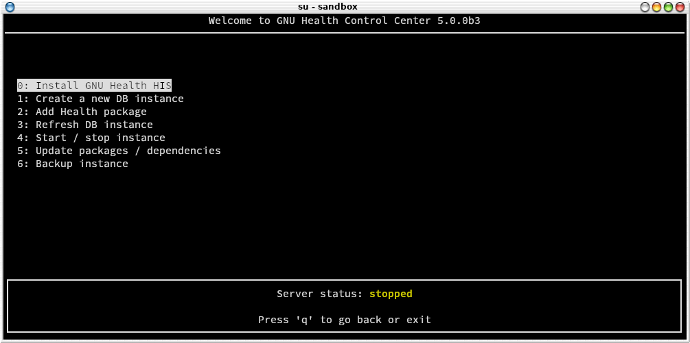
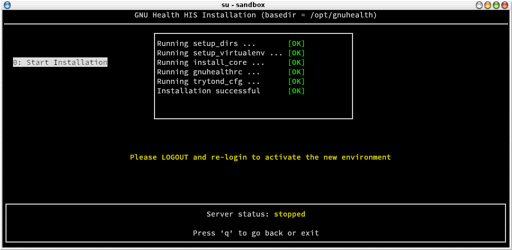
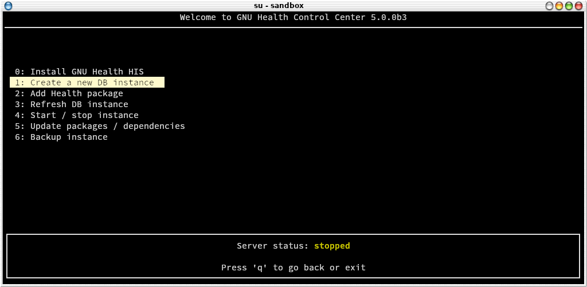
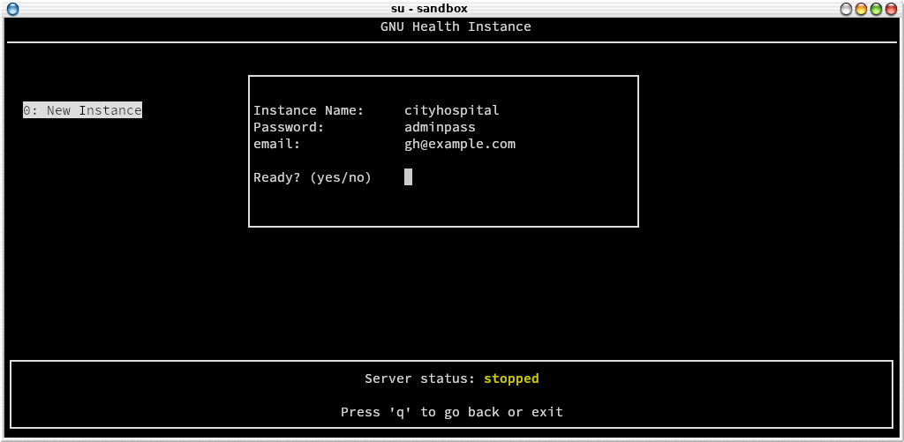
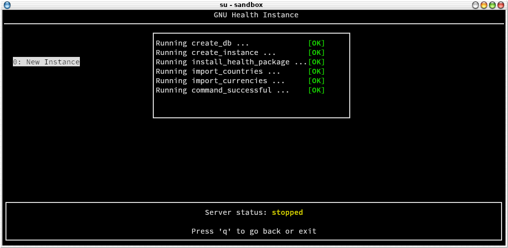

Vanilla Installation
Requirements
The latest stable GNU Health Hospital Management component uses these resources:
Operating system: GNU/Linux or BSD family (FreeBSD, openBSD, …) for the server.
RDBMS Database: PostgreSQL >= 15.x
Python: >= 3.10
Gunicorn: 23.0
Tryton 7.0
Errata
Before you continue, please read the Errata chapter for the latest issues involved the installation or upgrade procedure.
Installing GNU Health on GNU/Linux and FreeBSD
Operating System requirements
The following table contains the instructions to setup your operating system for a standard GNU Health installation. The operating systems and their version shown in the list have been tested using the instructions for each OS.
The installation instructions for the different operating systems and distributions have been done on a fresh installation. For simplicity’s sake, the server environment was installed without a GUI. No firewall was configured (we will cover this on the security section), and OpenSSH server was installed.
The instructions – written here – have been applied and verified with the following operating systems as shown below.
Warning
The GNU Health core team members use one or more of these operating systems, and distributions. Although you can use any distro you want, so we can only provide support on those platforms / releases we have test GNU Health HIS and that we use as a daily driver. Check the following table
Operating System |
Version |
Link |
Notes |
|---|---|---|---|
FreeBSD |
FreeBSD 14.3 |
||
Debian |
13 (Trixie) |
||
Void Linux |
Rolling |
||
openSUSE |
Leap 15.6 |
||
Ubuntu |
22.04 LTS |
Encrypting the GNUHealth database and attachment filesystem
The data stored in the database and attachment directory should be encrypted. You can encrypt the filesystems containing the PostreSQL datafiles (PGDATA) and the gnuhealth administrator $HOME directory. The attachment directory is specified by the “path” entry on the trytond.conf.).
It’s advisable that you use block device encryption, such as LUKS in GNU/Linux. If you use ZFS (most BSD systems), it delivers native filesystem encryption.
Setting up Network Time Protocol (NTP)
In order to properly run GNU Health, you need to make sure that the time on both the server (database and central instance) and clients are properly set and in sync. The best way to do this is to keep your clock synchronized with a NTP Server .
This is a critical step, not only for the smooth functioning of GNU Health, but also because many documents will have a timestamp associated with them that can have legal value.
Creating the Operating System User
Warning
Do this step only if you didn’t create the user during the installation of the operating system.
The following steps will create the GNU Health operating system user. Please note that many operating systems give you the option to create a regular user at installation time. If you already created the “gnuhealth” operating system user, you can skip this section, otherwise, create it now.
Run the following command as root:
# adduser gnuhealth
Note
If your Operating System doesn’t include the adduser command, you can use the useradd command:
# useradd -m gnuhealth
Creating destination directory
By default, gnuhealth HIS will be installed under /opt/gnuhealth . The goal is to use this directory
as the base for other components of the GNU Health ecosystem, like thalamus, FHIR server, etc. It will
make it easier to find and manage the resources.
If it has not been created yet and you want to use this default location you need to create it and
assign ownership to the gnuhealth user.
Run the following command as root:
# mkdir /opt/gnuhealth
# chown gnuhealth /opt/gnuhealth
Note
If the directory exists, you don’t need to re-create it. Just make sure the gnuhealth user has ownership.
Verify PostgreSQL authentication method
Note
You can skip this section if you made a standard installation on FreeBSD
PostgreSQL uses different authentication methods (MD5, ident, trust … ). Depending the Operating System, the postgreSQL server authentication method will vary.
The standard GNU Health installation uses the peer authentication method, so you need to check the postgreSQL authentication file configuration.
Locate the pg_hba.conf file and verify that the peer method is set.
The location of this configuration file varies across operating systems;
under UNIX/Linux, the full pathname of the file can be obtained with the
following command, to be executed as root:
# su - postgres -c "psql -t -P format=unaligned -c 'show hba_file'"
You may need to start the postgres server at least one time as this file may be created during first startup.
An example configuration file entry specifying use of the peer method is given in the following line:
local all all peer
The following example in particular may address issues with establishing a working database connection as reported in the context of the creation of the GNU Health database upon first use of the Tryton client (see further down; Symptom: the “Create” button is not displayed):
host all all 127.0.0.1/32 peer
host all all ::1/128 peer
Make sure you edit the file as user ‘postgres’, not root. Otherwise, postgres may have trouble reading the changed file. After any changes to the file, the postgreSQL server needs to be restarted.
Many authentication errors (e.g., database connection errors) arise because of not having correctly configured this file. You can use other authentication methods, and you can adapt the tryton / GNU Health configuration file to each of them. For the sake of simplicity, we based the documentation and sample files in this book on one specific method (trust).
Make sure you restart your postgresql server:
# service postgresql restart
Creating the Database User
The following command switches to the postgres administration user
and gives permissions to your newly created gnuhealth administrator:
Execute as root:
# su - postgres -c "createuser --createdb --no-createrole --no-superuser gnuhealth"
Installation with GNU Health Control
Warning
Do the following steps with your newly created gnuhealth user, do not use root.
Since GNU Health HIS 5.0, all the installation and management of the server is done through GNU Health Control.
The new GNU Health control is a self-contained python application that allows you to:
Install the GNU Health and Tryton server
Create new DB instances
Update dependencies
Install GNU Health packages
Start and Stop the GNU Health HIS server
Refresh the Instances (languages, datafiles…)
Make backups
In an nutshell, gnuhealth-control (“ghcontrol”) will do the daily tasks from a single point of entry.
GNU Health runs in a virtual environment : Another important technical feature from GHealth HIS 5.0 is that it runs within a Python virtual environment. It’s a safer and better way to encapsulate the required packages / libraries without conflicting with the underlying operating system.
GNU Health control creates the directory structure, as well as the virtual environment for you. It will also adjust the environment variables and configuration files so no need to fiddle with them in most circumstances.
The first thing you need to do is to download gnuhealth-control
$ python -m venv tmp_ghvenv
$ cd tmp_ghvenv
$ source bin/activate
$ pip install gnuhealth-control
It will initially install gnuhealth-control in an arbitrary, temporary virtual environment. At the moment of installing the GNU Health server, it will also automatically install gnuhealth-control under the definite location. You can delete tmp_venv after the initial installation if you want.
After installation, we’re ready to initialize the environment for the gnuhealth admin user.
$ ghcontrol
Installing the server
The first part of the installation is to create the directory structure and to install the required packages. This is all done automatically when choosing the first option
** 0: Install GNU Health HIS **


You can navigate in GNU Health control using the UP and DOWN keys (or typing the entry number) and “q” to go back or quit the application.
When you hit install, gnuhealth-control will go through the necessary steps, showing the return code for each task (project dir. structure, creation of virtual environment, configuration and log files, required tryton and other dependencies, GH core package…).
If everything went well, you will be asked to exit the program, logout and re-login to activate the new environment.


Congratulations! Your GNU Health server and dependencies are now installed and you are ready to move on with the instance creation. Again, after the initial installation, you need to logout and login again.
Some quick notes:
By default, the GNUHealth Hospital Information System base directory is under “/opt/gnuhealth/his-50”. You need write access to “/opt/gnuhealth”. If you don’t want to install it there, or you don’t have access to that dir, you can invoke ghcontrol with the “-b” argument and the base directory where you want it. For example, if you want to install GNU Health in your $HOME/ghealth dir, you can run “ghcontrol -b $HOME/ghealth”. There are more options to ghcontrol that you can study running ghcontrol –help.
All the environment variables will be set accordingly the basedir that you have provided
There are some aliases and helpers that you can use:
cdbase: takes you to the basedir (eg, “/opt/gnuhealth/his-50”)
cdlogs: takes you to the log directory (eg, “/opt/gnuhealth/his-50/log”)
editconf: Edits the GNU Health HIS tryton configuration file
Creating a new instance
The next time you log in to your gnuhealth admin user, the environment is ready, no no need to activate the virtual environment or use absolute paths.
Now that the GNU Health kernel is installed, we can create the database instance.
$ ghcontrol
From the main menu, choose: 1: Create a new DB instance


Input parameters: - DB name - “admin” user password - “admin” user email
You need to type “yes” to proceed with the installation process. If you want to correct any parameter, just type “no”.


There are quite a few tasks involved in this process, not just the creation of the database. As a summary:
Create the database
Initialize the Tryton packages and resources
Install the core health package
Install currencies
Install countries
The process is fully automated, and when it finished we’ll be ready to log into the newly created GNU Health HIS instance.


Your GNU Health instance is now ready! Your server is now configured with the basic necessary requirements, and is ready to be launched :) Many on the next sections are optional and many certainly are to be deployed when you feel comfortable with the basic use of the system.
Starting and Stopping GNU Health Server
The GNU Health Control Center allows you to see the current status of the server. You can also start and stop the server from the menu.
When you start ghcontrol, the server status will show in at the bottom of the screen. It will show in green when the server is running and in yellow when is stopped.

To start / stop the server you just need to press on the related submenu entry.
Warning
Needless to say, stopping the server will immediately shutdown the Tryton server, and all operations will stop. It will also affect to all the interfaces that are connected to the server.
Post-installation (optional) tasks
Your installation is done and now you can login into the server to proceed with the instance configuration (company, languages, users..).
The following tasks are optional and will be moved to a different chapter of this guide).
Choosing additional packages
The initial installation is now done. The database has been created and the GNU Health core package is active. Depending on your area of work, your institution will need extra functionality that is provided in the 50+ GNU Health modules.
This is a very important step in the GNU Health implementation process, because ideally we should aim for the minimum amount of packages that deliver the functionality we need. Installing extra packages increases complexity, so please make sure you put enough time to study the packages you will install.
Note
You can always install packages at a later time. If you are new to GNU Health, we recommend you spend some days / weeks using only the core package. Once you feel comfortable, you can dive into the remaining functionality options.
Here is the list of current GNUHealth HIS Features
Now that you know which packages you’d like to include on your institution, let’s move to the package installation section.

From the main menu, choose “2: Add Health package” entry. The next screen will show you the list of official GNU Health packages for the current version.
Note
For security and integrity reasons, gnuhealth-control only shows official packages.
The following screen shows an example of adding the “lab” package, that provides the GNU Health Laboratory Information System functionality (Occhiolino)

The all special package There is an special package called “all”. As the name implies, typing all in the package selection field will install the whole list of GNU Health packages, and their dependencies. This option is mostly used for training or evaluation purposes, and rarely in production systems.
Warning
Installing all packages increases complexity and reduces modularity. It is usually reserved for training and evaluation purposes.
Installing a package will do download the related Pyhton gnuhealth package and its dependencies. If you want to activate the package in one or more instances, you need to refresh the instance so you can select it and activate it (next section).
Note
Adding a package installs the relevant gnuhealth packages at operating system level. The activation of the package is instance dependant.

If the everything went well, gnuhealth-control will display the message “Package(s) Installation OK” and you are ready to install more packages or to move to the next section if you’re happy :)
Refresh Instance
Refreshing the instance means registering the new resources in your GNU Health database instance. The process traverses all the packages, their models, reports, translations, etc..

To refresh a particular instance from gnuhealth-control, you do so by choosing “3: Refresh DB instance” entry from the main menu.
Note
You need to refresh the instance anytime you install a new package.

Creating a Systemd service for the GNU Health server
If you use the standard installation method, you can use the following scripts to automate the startup/stop of the GNU Health instance using systemd services.
GNU Health service unit file
Create the GNU Health Unit file under /etc/systemd/system/gnuhealth.service:
[Unit]
Description=GNU Health Server
After=network.target
[Service]
Type=simple
User=gnuhealth
WorkingDirectory=/opt/gnuhealth/his-50
ExecStart=/opt/gnuhealth/his-50/start_gnuhealth
Restart=on-abort
[Install]
WantedBy=multi-user.target
Note
The services assumes the default basedir /opt/gnuhealth and user. Please adjust if you use a custom location and/or user
Using a WSGI Server for GNU Health Hospital Management Component
GNU Health HIS uses by default the werkzeug server. For production servers and large deployments, GNU Health HIS will benefit from a Web Server Gateway Interface (WSGI), such as Gunicorn and a web server that supports reverse proxy, like nginx.
Your Trytond configuration file
You can edit your trytond.conf file to meet the requirements. You can edit this file directly using the alias editconf command.
# Generated by gnuhealth-control
[database]
uri = postgresql://localhost:5432
path = /opt/gnuhealth/his-50/attach
[web]
# Listen to all network interfaces.
listen = 0.0.0.0:8000
# If you install SAO for the web client
# root = /opt/gnuhealth/his-50/sao/package
Note
The ‘listen’ parameter works with the default werkzeug server. It has no effect when you use gunicorn / nginx. The ports & sockets are configured in gunicorn and nginx.
Gunicorn configuration file
This is a sample for the gnuhealth guniconrn(gunicorn.cfg.py) file. Make sure NINGX user has the appropriate permissions to the gunicorn socket.
bind="unix:/tmp/gunicorn-his.socket"
workers=2
timeout=300
Configuring nginx as a reverse proxy for GNU Health HIS
In this sample, NINGX will listen to 443 in HTTPS mode to requests coming from the web clients.
worker_processes 2;
events {
worker_connections 1024;
# use kqueue; # Uncomment in FreeBSD
}
http {
include mime.types;
default_type application/octet-stream;
sendfile off;
keepalive_timeout 1h;
# HTTPS server
server {
listen 443 ssl;
server_name federation.gnuhealth.org;
ssl_certificate /opt/gnuhealth/certs/gnuhealthfed.crt;
ssl_certificate_key /opt/gnuhealth/certs/gnuhealthfed.key;
ssl_session_cache shared:SSL:1m;
ssl_session_timeout 5m;
ssl_ciphers HIGH:!aNULL:!MD5;
ssl_prefer_server_ciphers on;
location / {
proxy_pass http://unix:/tmp/gunicorn-his.socket;
proxy_set_header Host $host;
proxy_set_header X-Real-IP $remote_addr;
proxy_set_header X-Forwarded-For $proxy_add_x_forwarded_for;
proxy_set_header X-Forwarded-Proto $scheme;
proxy_redirect off;
}
}
}
Putting everything together and booting the GNU Health Server
Once you have configured Gunicorn and nginx, is time to put in into production
Start gunicorn
Start nginx
gunicorn -c gunicorn.cfg.py --daemon trytond.application:app
Note
The example above is actually how we have on our community server (federation.gnuhealth.org) running on FreeBSD, gunicorn and nginx.
Installation of the GNU Health Client
GNU Health Client installation using pip
Install the system requirements for your operating system.
To do so follow the instructions under Operating System-Specific Notes -> Your operating system -> ‘Requirements for GTK client’.
Create a virtual environment for the GNU Health client
$ python -m venv ghclientenv
$ cd ghclientenv
$ source bin/activate
Install GNU Health client
$ pip install --upgrade gnuhealth-client
The following command will boot your GNU Health client:
$ gnuhealth-client
Alternative Methods
System Packages
Instead from source as described above, you can install the GNU Health Client from pre-build packages as well. openSUSE offer packages that you can install with your systems package manager. Make sure you get the current gnuhealth-client version 5.0.
Logging into the Application
Now that you’re back at the login screen, you’ll notice that the selected profile is the one you’ve just created. Fill in the login form:
User name: the one you used previously (usually
admin)Password: the one entered in gnuhealth-control
Creating a Company
The next thing you need to do is to create the initial company, that will be your health center. You will be presented with a wizard to create it.
Press F3 to create a new company.
Note
At the party form, please make sure you set the institution attribute. You will link this company to your main health institution later on. Please refer to the screenshot provided in this section for details.
New instance users
#. After you’ve created the database, the system will ask you to create some new users. You can skip this step for now.
Activating extra packages
#. Remember the modules (packages) are installed at OS level using gnuhealth-control. Please refer to this section on how to install new packages The GNU Health Control Center
#. You are then presented with a list of modules that will provide the functionality you desire. If you don’t see the Modules window, navigate to it on the left side: Administration → Modules → Modules.
Select the module(s) you want to activate and click on Mark for installation.
Click on the Action icon and select Perform Pending Installation/Upgrade:
Tryton will automatically select all the dependent modules required for the installation:
#. Click on Start Upgrade. This process will take a while, depending on the computer where GNU Health is being installed on. Once it’s done, the following message appears.
Customizing the GNU Health Client
For GNU/Linux and other free operating systems, the GNU Health GTK client configuration file can be found at:
$HOME/.config/gnuhealth/<VERSION>/gnuhealth-client.conf
For example:
$HOME/.config/gnuhealth/5.0/gnuhealth-client.conf
Completion
Congratulations! You have completed the initial installation of GNU Health. In the next chapter we will discuss how to add functionality by installing additional modules.